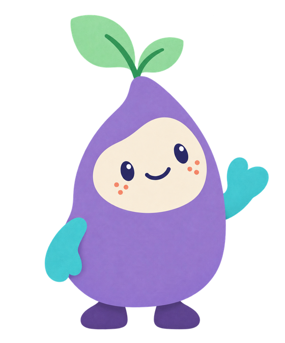
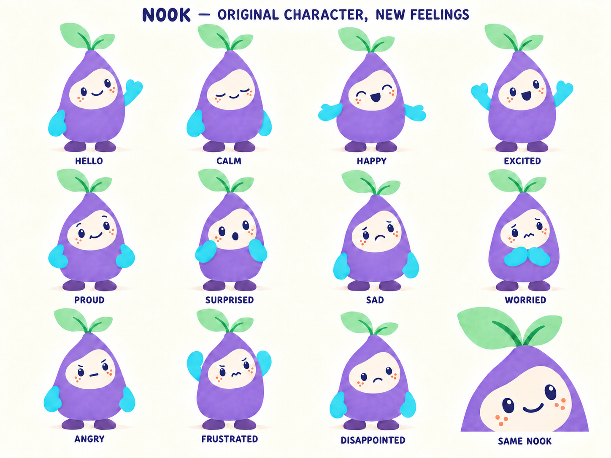

<!doctype html>
<html lang="en"><head><meta charset="utf-8"><meta name="viewport" content="width=device-width,initial-scale=1,viewport-fit=cover">
<title>Little Patterns round 4 mockups</title>
<link rel="stylesheet" href="frame.css">
<script src="nook-art.js"></script><script src="icons.js"></script>
</head><body>
<script>
(function(){
  const q=new URLSearchParams(location.search),screen=q.get('screen')||'shelf';
  const I=window.LPIcons,N=window.NookArt;
  const SYM='../../../public/fireworks/little-patterns/assets/symbols/';
  const NOOK='';
  N.svg=function(f,o){return NOOK.replace('class="nook"','class="nook '+((o&&o.className)||'')+'"');};
  const sym=n=>'';
  const apple=(cls,tag)=>'<span class="tagged"><i class="apple '+(cls||'')+'"></i>'+(tag?'<b class="count-tag">'+tag+'</b>':'')+'</span>';
  // Top bar: shelf, at most two mode chips, one level pill. Sound and Grown-ups are not here (they live on the shelf).
  const top=(modes,on,pill)=>'<header class="nf-top"><button class="nf-shelf" aria-label="Nook’s games">'+I.shelf+'</button><div class="nf-modes">'+(modes||[]).map((t,i)=>'<button class="chip" aria-pressed="'+(i===on)+'">'+t+'</button>').join('')+'</div>'+(pill?'<button class="pill" aria-haspopup="dialog">'+pill+'</button>':'')+'</header>';
  const hear='<span class="hear" aria-hidden="true">'+I.sound+'</span>';
  const nook=(feeling,text,success)=>'<div class="nf-nook">'+N.svg(feeling,{decorative:true})+'<button class="speech'+(success?' success':'')+'" aria-label="Hear it again">'+text+hear+'</button></div>';
  const actions=(kind)=>'<footer class="nf-actions">'+(kind==='done'?'<button class="btn-again">↻ Again</button><button class="btn-next">Next →</button>':kind==='perform'?'<button class="btn-ghost"></button><button class="btn-done"><span class="progress"></span>'+I.tick+'<span>Done</span></button>':kind==='none'?'<button class="btn-ghost"></button><button class="btn-ghost"></button>':'<button class="btn-help">'+I.help+'<span>Help!</span></button><button class="btn-ghost"></button>')+'</footer>';
  const frame=(o)=>'<div class="nf '+(o.cls||'')+(o.noNook?' solo':'')+'">'+top(o.modes,o.on,o.pill)+'<main class="nf-stage">'+(o.noNook?'':nook(o.feeling,o.bubble,o.success))+'<section class="nf-task"><div class="objects">'+o.objects+'</div>'+(o.answers||'')+'</section></main>'+actions(o.kind)+'</div>';
  const answers=(vals,opts={})=>'<div class="answers">'+vals.map(v=>'<button class="answer'+(opts.hint===v?' hint':'')+(opts.chosen===v?' chosen':opts.chosen!==undefined?' faded':'')+'">'+v+'</button>').join('')+'</div>';
  const S={};
  const TILES=[['count','Count'],['add','Add'],['words','Words'],['patterns','Patterns'],['shapes','Shapes'],['feelings','Feelings'],['paint','Paint'],['blocks','Blocks']];
  const tiles=(current)=>'<div class="tiles">'+TILES.map(([k,l])=>'<button class="tile '+k+'"'+(k===current?' aria-current="true"':'')+'>'+I[k]+'<span>'+l+'</span></button>').join('')+'</div>';
  const foot=()=>'<div class="shelf-foot"><button class="nf-grown" aria-label="Grown-ups: press and hold"><svg class="ring" viewBox="0 0 54 54" style="--hold:'+(q.get('hold')||0)+'"><circle cx="27" cy="27" r="25"/></svg>'+I.gear+'</button></div>';
  S.shelf=()=>'<div class="shelf"><div class="shelf-top">'+N.svg('greet',{decorative:true})+'<button class="speech" aria-label="Hear it again">Hello! I’m Nook. Let’s play.'+hear+'</button></div>'+tiles()+foot()+'</div>';
  S['shelf-over-count']=()=>S.count()+'<div class="overlay"><div class="shelf"><div class="shelf-top">'+N.svg('excited',{decorative:true})+'<button class="speech">I feel excited! What shall we play?'+hear+'</button></div>'+tiles('count')+'</div></div>';
  S.count=()=>frame({modes:null,pill:'1 to 5',feeling:'calm',bubble:'How many apples?',objects:'<div class="five-frame">'+[1,1,1,1,0].map(f=>'<span class="pocket'+(f?' full':'')+'">'+(f?'<i class="apple"></i>':'')+'</span>').join('')+'</div>',answers:answers([3,4,5]),kind:'play'});
  S.add=()=>frame({modes:['Add','Take away'],on:0,pill:'Up to 5',feeling:'calm',bubble:'Three, then two more. How many?',objects:'<div class="join-row"><div class="group" style="--cols:3">'+apple()+apple()+apple()+'</div><b class="plus">+</b><div class="group more" style="--cols:2">'+apple()+apple()+'</div></div><p class="equation">3 + 2 = <span class="unknown">?</span></p>',answers:answers([4,5,6]),kind:'play'});
  S['add-help']=()=>frame({modes:['Add','Take away'],on:0,pill:'Up to 5',feeling:'calm',bubble:'Count them all with me.',objects:'<div class="join-row"><div class="group" style="--cols:3">'+apple('',1)+apple('',2)+apple('',3)+'</div><b class="plus">+</b><div class="group more" style="--cols:2">'+apple('',4)+apple('',5)+'</div></div><p class="equation">3 + 2 = <span class="unknown">?</span></p>',answers:answers([4,5,6]),kind:'play'});
  S['add-done']=()=>frame({modes:['Add','Take away'],on:0,pill:'Up to 5',feeling:'proud',bubble:'We did it! 3 + 2 = 5.',success:true,objects:'<div class="join-row"><div class="group" style="--cols:3">'+apple()+apple()+apple()+'</div><b class="plus">+</b><div class="group" style="--cols:2">'+apple()+apple()+'</div></div><p class="equation">3 + 2 = <span class="unknown filled">5</span></p>',answers:answers([4,5,6],{chosen:5}),kind:'done'});
  S['add-bridge']=()=>frame({modes:['Add','Take away'],on:0,pill:'Over ten',feeling:'calm',bubble:'Eight, then seven more. How many?',objects:'<div class="ten-pair"><div class="five-frame ten">'+[1,1,1,1,1,1,1,1,0,0].map(f=>'<span class="pocket'+(f?' full':'')+'">'+(f?'<i class="apple"></i>':'')+'</span>').join('')+'</div><b class="plus">+</b><div class="five-frame ten more">'+[1,1,1,1,1,1,1,0,0,0].map(f=>'<span class="pocket'+(f?' full':'')+'">'+(f?'<i class="apple"></i>':'')+'</span>').join('')+'</div></div><p class="equation">8 + 7 = <span class="unknown">?</span></p>',answers:answers([14,15,16]),kind:'play'});
  S.take=()=>frame({modes:['Add','Take away'],on:1,pill:'Up to 10',feeling:'calm',bubble:'Nook eats two. How many are left?',objects:'<div class="join-row"><div class="group" style="--cols:5">'+apple()+apple()+apple()+apple()+apple('gone')+apple('gone')+'</div></div><p class="equation">6 − 2 = <span class="unknown">?</span></p>',answers:answers([3,4,5]),kind:'play'});
  const keysABC='ABCDEFGHIJKLMNOPQRSTUVWXYZ'.split('').map(c=>'<button class="key">'+c+'</button>').join('')+'<button class="key fn">⌫ Delete</button><button class="key go">Enter ✓</button>';
  S.words=()=>frame({cls:'words',modes:null,pill:'Missing word',feeling:'calm',bubble:'Type the missing word.',objects:'<div class="speech-inline" hidden>Type the missing word.</div><div class="sentence-row">'+sym('sun')+'<div class="sentence"><span>The</span><span class="gap">S</span><span>is hot.</span></div></div><div class="cards"><button class="card">'+sym('sun').replace('class="symbol"','')+'SUN</button><button class="card">'+sym('cat').replace('class="symbol"','')+'CAT</button><button class="card">'+sym('bus').replace('class="symbol"','')+'BUS</button></div><div class="keys">'+keysABC+'</div>',kind:'play'});
  S.patterns=()=>frame({modes:null,pill:'<i class="shape circle"></i><i class="shape square"></i> 2 shapes',feeling:'calm',bubble:'What comes next?',objects:'<div class="strip"><span class="bead model"><i class="shape circle"></i></span><span class="bead model"><i class="shape square"></i></span><span class="bead"><i class="shape circle"></i></span><span class="bead"><i class="shape square"></i></span><span class="bead"><i class="shape circle"></i></span><button class="bead missing">?</button></div>',answers:'<div class="answers"><button class="answer"><i class="shape circle"></i></button><button class="answer"><i class="shape square"></i></button></div>',kind:'play'});
  // Shapes: points given directly so orientation and proportion vary (an irregular pentagon, a slanted hexagon, a tall rectangle).
  const PENT=[[120,30],[205,92],[172,205],[64,198],[32,96]],HEX=[[70,36],[172,30],[214,118],[164,210],[62,206],[26,118]],RECT=[[60,30],[180,30],[180,210],[60,210]];
  const shapeSvg=(p,lit,tags,warm)=>{const n=p.length;let s='<svg class="big-shape" viewBox="0 0 240 240" aria-hidden="true"><path class="fill'+(warm?' warm':'')+'" d="M'+p.map(q=>q.join(' ')).join('L')+'Z"/>';for(let i=0;i<n;i++){const a=p[i],b=p[(i+1)%n];s+='<path class="hit" d="M'+a.join(' ')+'L'+b.join(' ')+'"/><path class="side'+(i<lit?' lit':'')+'" d="M'+a.join(' ')+'L'+b.join(' ')+'"/>';}if(tags)for(let i=0;i<lit;i++){const a=p[i],b=p[(i+1)%n];const mx=(a[0]+b[0])/2,my=(a[1]+b[1])/2;const ox=(mx-120)*.24,oy=(my-120)*.24;s+='<circle cx="'+(mx+ox)+'" cy="'+(my+oy)+'" r="15" fill="#fff9d5" stroke="#79996b" stroke-width="2"/><text class="tag" x="'+(mx+ox)+'" y="'+(my+oy+8)+'" text-anchor="middle">'+(i+1)+'</text>';}return s+'</svg>';};
  S['shapes-sides']=()=>frame({modes:['Sides','Name'],on:0,pill:'Shapes 2',feeling:'calm',bubble:'How many sides? Tap each side.',objects:shapeSvg(PENT,2,true),answers:answers([4,5,6]),kind:'play'});
  S['shapes-sides-done']=()=>frame({modes:['Sides','Name'],on:0,pill:'Shapes 2',feeling:'excited',bubble:'We did it! A pentagon has five sides.',success:true,objects:shapeSvg(PENT,5,true,true),answers:answers([4,5,6],{chosen:5}),kind:'done'});
  S['shapes-name']=()=>frame({modes:['Sides','Name'],on:1,pill:'Shapes 2',feeling:'calm',bubble:'Which shape is this?',objects:shapeSvg(HEX,6,false),answers:'<div class="answers"><button class="answer word">HEXAGON</button><button class="answer word">RECTANGLE</button><button class="answer word">PENTAGON</button></div>',kind:'play'});
  const FEEL=['happy','calm','proud','excited','surprised','sad','worried','disappointed','angry','frustrated'];
  S['feelings-board']=()=>frame({modes:null,pill:'Nook feels…',feeling:'calm',bubble:'Nook feels… Tap one.',objects:'<div class="board">'+FEEL.map((f,i)=>'<button class="feel'+(i<3?' done':'')+'">'+(i<3?'<span class="tick">'+I.tick+'</span>':'')+N.face(f)+'<span>'+f.toUpperCase()+'</span></button>').join('')+'</div>',kind:'none'});
  S['feelings-perform']=()=>frame({modes:null,pill:null,noNook:true,objects:'<div class="perform">'+N.svg('excited',{decorative:true})+'<div><div class="word">EXCITED</div><div class="line">Nook feels excited.</div></div></div>',kind:'perform'});
  S['feelings-perform-sad']=()=>frame({modes:null,pill:null,noNook:true,objects:'<div class="perform">'+N.svg('sad',{decorative:true})+'<div><div class="word">SAD</div><div class="line">Nook feels sad.</div></div></div>',kind:'perform'});
  S['feelings-match']=()=>frame({modes:null,pill:'Which feeling?',noNook:true,objects:'<div class="match"><button class="speech" style="flex:none;width:100%;margin:0">How does Nook feel?'+hear+'</button>'+N.svg('worried',{decorative:true,className:'match-nook'})+'</div>',answers:'<div class="answers"><button class="answer word">WORRIED</button><button class="answer word">EXCITED</button><button class="answer word">PROUD</button></div>',kind:'play'});
  S['feelings-me']=()=>frame({modes:null,pill:'Me',feeling:'calm',bubble:'You feel sad. Thank you for telling me.',objects:'<div class="me-card">'+N.face('sad',{ring:'#9aa6b8'})+'<span>SAD</span></div><p class="me-line">Show this to a grown-up if you like.</p>',kind:'perform'});
  S['nook-sheet']=()=>'<div style="display:grid;place-items:center;padding:10px;background:#fffcdf;height:100%;grid-template-rows:minmax(0,1fr)"></div>';

  // ---- Navigation proposal 2 (12 Oct): grouped shelf with folder previews, sub-menu with back arrow and level row, in-game caption ----
  const BACK='<svg viewBox="0 0 24 24" aria-hidden="true"><path d="M14 5l-7 7 7 7" fill="none" stroke="currentColor" stroke-width="3" stroke-linecap="round" stroke-linejoin="round"/></svg>';
  const applesPic=(n,cols)=>'<span class="lvl-apples" style="--c:'+(cols||Math.min(n,5))+'">'+Array.from({length:n},()=>'<i class="apple"></i>').join('')+'</span>';
  const polyPts=(n,r,cx,cy,rot)=>Array.from({length:n},(_,i)=>{const a=rot+i*2*Math.PI/n;return [cx+r*Math.cos(a),cy+r*Math.sin(a)];});
  const miniShape=(n,fill,stroke)=>'<svg viewBox="0 0 40 40" aria-hidden="true">'+(n===0?'<circle cx="20" cy="20" r="15" fill="'+fill+'" stroke="'+stroke+'" stroke-width="3"/>':'<path d="M'+polyPts(n,15,20,20,-Math.PI/2+(n%2?0:Math.PI/n)).map(q=>q.join(' ')).join('L')+'Z" fill="'+fill+'" stroke="'+stroke+'" stroke-width="3" stroke-linejoin="round"/>')+'</svg>';
  // Simple, stylised glyphs for the folder previews: one bold mark per cell, drawn in the tile's own ink, no text, no tiny pictures.
  const G=(body,ink)=>'<svg viewBox="0 0 40 40" aria-hidden="true" class="glyph" style="--ink:'+ink+'">'+body+'</svg>';
  const dot=(x,y,r)=>'<circle cx="'+x+'" cy="'+y+'" r="'+(r||5)+'" fill="var(--ink)"/>';
  const FOLDERS=()=>({
    count:[G(dot(20,20,7),'#3f8f7c'),G(dot(13,20,6)+dot(27,20,6),'#3f8f7c'),G(dot(11,20,5)+dot(20,20,5)+dot(29,20,5),'#3f8f7c'),G('<rect x="8" y="12" width="24" height="6" rx="3" fill="var(--ink)"/><rect x="8" y="22" width="24" height="6" rx="3" fill="var(--ink)"/>','#3f8f7c')],
    add:[G('<path d="M20 9v22M9 20h22" stroke="var(--ink)" stroke-width="7" stroke-linecap="round"/>','#8a6a1c'),G('<path d="M9 20h22" stroke="var(--ink)" stroke-width="7" stroke-linecap="round"/>','#8a6a1c')],
    words:[G('<text x="20" y="29" text-anchor="middle" font-family="Trebuchet MS,Arial" font-weight="900" font-size="26" fill="var(--ink)">A</text>','#5a4680'),G('<rect x="9" y="10" width="22" height="22" rx="5" fill="none" stroke="var(--ink)" stroke-width="3" stroke-dasharray="4 3"/>','#5a4680'),G('<rect x="6" y="14" width="13" height="12" rx="3" fill="var(--ink)"/><rect x="22" y="14" width="13" height="12" rx="3" fill="var(--ink)" opacity=".55"/>','#5a4680'),G('<text x="20" y="29" text-anchor="middle" font-family="Trebuchet MS,Arial" font-weight="900" font-size="26" fill="var(--ink)">3</text>','#5a4680')],
    patterns:[G(dot(12,20,6)+'<rect x="22" y="14" width="12" height="12" rx="3" fill="var(--ink)" opacity=".6"/>','#a8584a'),G(dot(9,20,5)+'<rect x="16" y="15" width="10" height="10" rx="2" fill="var(--ink)" opacity=".6"/><path d="M28 25l4-10 4 10z" fill="var(--ink)" opacity=".8"/>','#a8584a'),G('<path d="M20 10v20M10 20h20" stroke="var(--ink)" stroke-width="6" stroke-linecap="round"/>','#a8584a')],
    shapes:[G('<path d="M20 7l13 10-5 15H12L7 17z" fill="none" stroke="var(--ink)" stroke-width="4" stroke-linejoin="round"/>','#9a6a16'),G('<path d="M13 8h14l7 12-7 12H13L6 20z" fill="none" stroke="var(--ink)" stroke-width="4" stroke-linejoin="round"/>','#9a6a16')],
    feelings:[G('<circle cx="20" cy="20" r="15" fill="none" stroke="var(--ink)" stroke-width="3.5"/><path d="M13 24q7 7 14 0" stroke="var(--ink)" stroke-width="3.5" fill="none" stroke-linecap="round"/>'+dot(14,16,2.2)+dot(26,16,2.2),'#5a4680'),G('<circle cx="20" cy="20" r="15" fill="none" stroke="var(--ink)" stroke-width="3.5"/><path d="M13 27q7-7 14 0" stroke="var(--ink)" stroke-width="3.5" fill="none" stroke-linecap="round"/>'+dot(14,16,2.2)+dot(26,16,2.2),'#5a4680'),G(dot(13,15,5)+dot(27,15,5)+'<path d="M5 33q8-10 16 0M19 33q8-10 16 0" fill="var(--ink)"/>','#5a4680'),G('<circle cx="20" cy="20" r="15" fill="none" stroke="var(--ink)" stroke-width="3.5"/><path d="M14 25h12" stroke="var(--ink)" stroke-width="3.5" stroke-linecap="round"/>'+dot(14,16,2.2)+dot(26,16,2.2),'#5a4680')]
  });
  const tile2=(k,l,folder)=>'<button class="tile '+k+(folder?' folder':'')+'">'+(folder?'<span class="peek">'+FOLDERS()[k].map(c=>'<span class="peek-cell">'+c+'</span>').join('')+'</span>':I[k])+'<span>'+l+'</span></button>';
  S['shelf-v2']=()=>'<div class="shelf"><div class="shelf-top">'+N.svg('greet',{decorative:true})+'<button class="speech" aria-label="Hear it again">Hello! I\u2019m Nook. Let\u2019s play.'+hear+'</button></div><div class="tiles v2">'+[['count','Count'],['add','Add'],['words','Words'],['patterns','Patterns'],['shapes','Shapes'],['feelings','Feelings']].map(([k,l])=>tile2(k,l,true)).join('')+'<span class="tiles-break" aria-hidden="true"></span>'+[['paint','Paint'],['blocks','Blocks']].map(([k,l])=>tile2(k,l,false)).join('')+'</div>'+foot()+'</div>';
  const sub=(game,label,line,acts,levels)=>'<div class="shelf submenu"><header class="sub-top"><button class="nf-shelf back" aria-label="All games">'+BACK+'</button><span class="sub-title">'+I[game]+label+'</span></header><div class="shelf-top">'+N.svg('greet',{decorative:true})+'<button class="speech">'+line+hear+'</button></div><div class="acts">'+acts.map(([pic,name,on])=>'<button class="tile '+game+'"'+(on?' aria-current="true"':'')+'>'+pic+'<span>'+name+'</span></button>').join('')+'</div>'+(levels?'<div class="levels-row" role="group" aria-label="How many">'+levels.map(([pic,name,on])=>'<button class="lvl'+(on?' on':'')+'">'+pic+'<small>'+name+'</small></button>').join('')+'</div>':'')+'</div>';
  S['submenu-add']=()=>sub('add','Add','Add or take away?',[['<span class="big-pic">'+applesPic(2)+'<b class="plus">+</b>'+applesPic(1)+'</span>','Add',true],['<span class="big-pic">'+applesPic(3)+'</span>','Take away',false]],[[applesPic(5),'Up to 5',true],[applesPic(10),'Up to 10',false],['<span class="lvl-frames"></span>','Up to 20',false],['<span class="lvl-frames two"></span>','Over ten',false],['<span class="lvl-rows"><i></i><i></i><i></i></span>','Tens',false],['<b class="lvl-q">2 + ? = 5</b>','Missing',false]]);
  S['submenu-feelings']=()=>sub('feelings','Feelings','Which feelings game?',[[N.face('happy'),'Nook feels\u2026',true],[N.face('worried'),'Which feeling?',false],['<span class="big-friend"></span>','Friends',false],[N.face('calm',{ring:'#9aa6b8'}),'Me',false]],null);
  S['submenu-patterns']=()=>sub('patterns','Patterns','Which pattern game?',[['<span class="big-pic"><i class="shape circle"></i><i class="shape square"></i><i class="shape circle"></i><i class="shape square"></i><span class="bead missing">?</span></span>','Finish the pattern',true],['<span class="big-pic"><i class="shape circle"></i><i class="shape oval"></i><i class="shape triangle"></i><b class="plus">+</b></span>','Make your own',false]],[['<span class="lvl-beads"><i class="shape circle"></i><i class="shape square"></i></span>','2 shapes',true],['<span class="lvl-beads"><i class="shape circle"></i><i class="shape square"></i><i class="shape triangle"></i></span>','3 shapes',false],['<span class="lvl-beads"><i class="shape circle"></i><i class="shape square"></i><i class="shape triangle"></i><i class="shape oval"></i></span>','4 shapes',false]]);
  S['ingame-caption']=()=>'<div class="nf"><header class="nf-top"><button class="nf-shelf" aria-label="All games">'+I.shelf+'</button><span class="caption">'+I.add+'<span>Add \u00b7 Up to 5</span></span></header><main class="nf-stage">'+nook('calm','Three, then two more. How many?')+'<section class="nf-task"><div class="objects"><div class="join-row"><div class="group" style="--cols:3">'+apple()+apple()+apple()+'</div><b class="plus">+</b><div class="group more" style="--cols:2">'+apple()+apple()+'</div></div><p class="equation">3 + 2 = <span class="unknown">?</span></p></div>'+answers([4,5,6])+'</section></main>'+actions('play')+'</div>';

  document.body.innerHTML=(S[screen]||S.shelf)();
  // landscape Words: the bubble folds into the card as an inline line
  if(screen==='words'&&matchMedia('(orientation:landscape) and (max-height:520px)').matches){const inl=document.querySelector('.speech-inline');if(inl)inl.hidden=false;}
  document.title='Mock · '+screen;
})();
</script>
</body></html>
